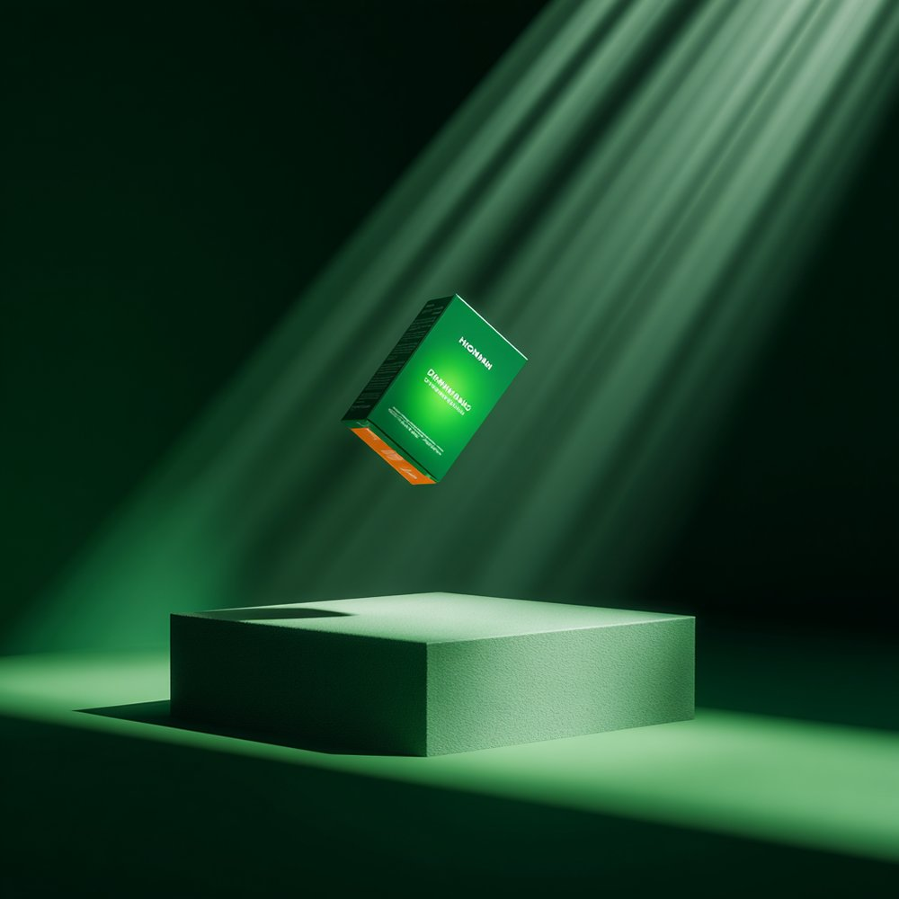
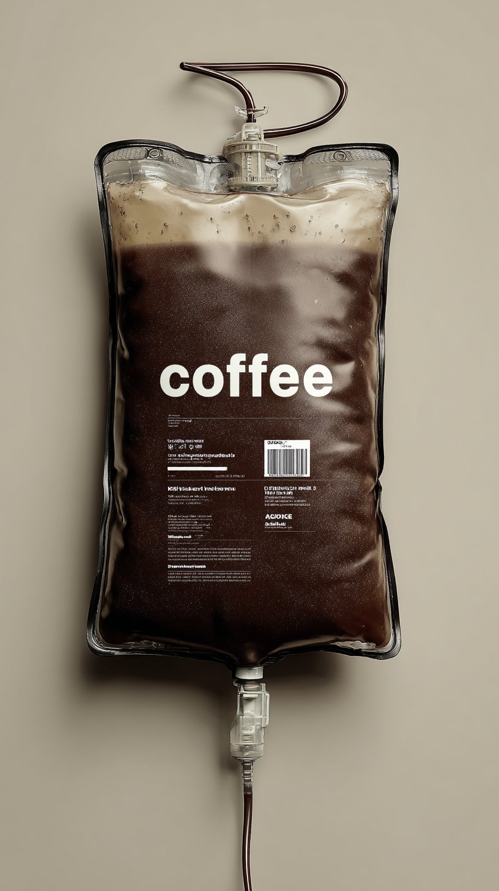
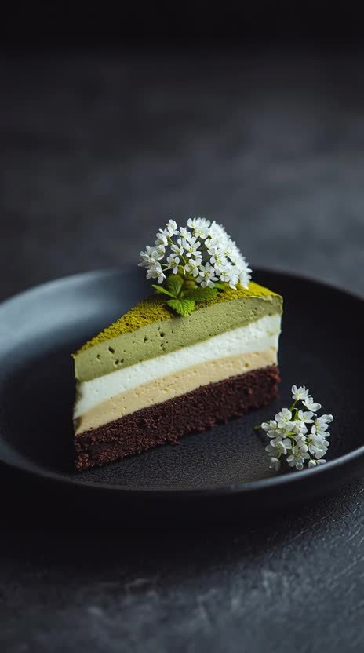

01Climate technology
Karbon Kreds
Carbon infrastructure & digital platform
Brand strategy · UX/UI · Web development · SEO
Explore the projectClient websites, proprietary software and clearly labelled studio concepts. Explore the thinking as well as the finished work.
Carbon infrastructure & digital platform
Brand strategy · UX/UI · Web development · SEO
Explore the projectHospitality operating system
Product strategy · UX/UI · Software engineering · Automation
Explore the projectSkincare campaign · Studio concept
Creative direction · Campaign concept · AI-assisted visual production
Explore the projectCoffee imagery & motion · Studio concept
Art direction · Campaign concept · Creative content · Short-form motion
Explore the projectA simulated workflow shows how incoming requests can be classified, routed and prepared for human review. This is a capability demonstration, not a client deployment.
Explore AI automationAn example of turning a project inquiry into a structured brief.
Intent Website redesign
Route Digital experience team
Next step Review the prepared brief
A sample of AI-assisted studio work spanning beauty, wellness, food, home & fragrance — concept-driven visuals engineered for campaigns, not just catalog shots.






Muted, looping product motion built for social and web — same studio discipline, in motion.